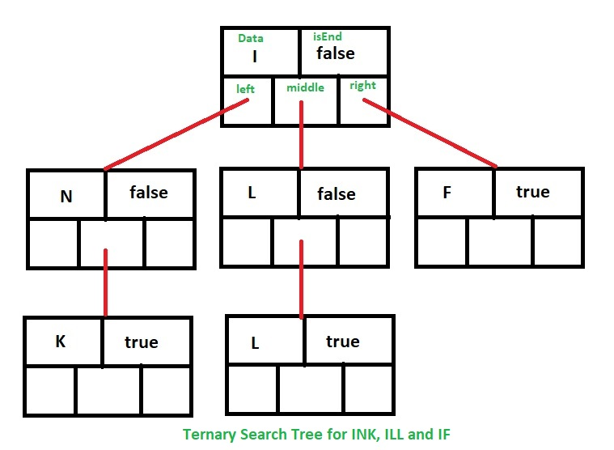

What is a Ternary Search Tree?
In computer science, a ternary search tree is a type of trie
(sometimes called a prefix tree) where nodes are arranged in a
manner similar to a binary search tree, but with up to three
children rather than the binary tree's limit of two. Like other
prefix trees, a ternary search tree can be used as an associative
map structure with the ability for incremental string search.
However, ternary search trees are more space efficient compared to
standard prefix trees, at the cost of speed. Common applications for
ternary search trees include spell-checking and auto-completion.

X